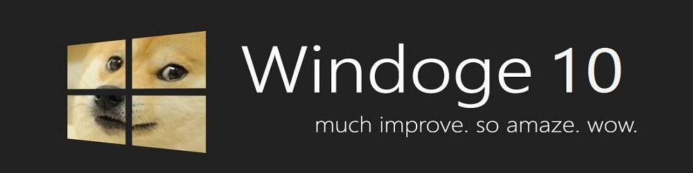

UI测试
尺寸测试
事件测试
天气
UI测试
轮播及事件测试

9宫格测试
1
5
2
3
4
5
6
区域滚动
面板
面板1
面板1子内容
面板
面板2子内容
面板3
面板3子内容
选项
1
2
3
4
UI测试
尺寸测试
事件测试
天气
尺寸测试
25单位
50单位
50单位
50px
200px
500px
25rem.1/100
50rem
75rem
1rem
2rem
5rem
10rem
10px
20px
30px
40px
50单位
UI测试
尺寸测试
事件测试
天气
事件测试